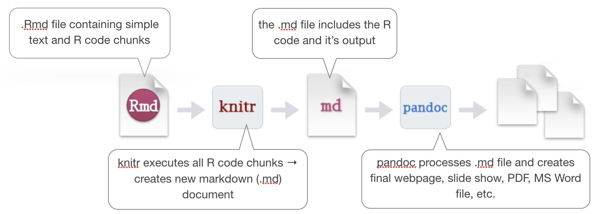
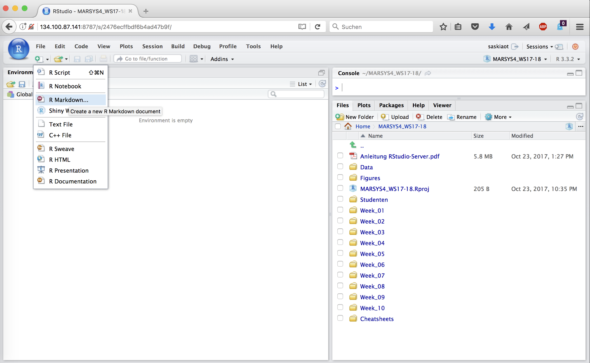
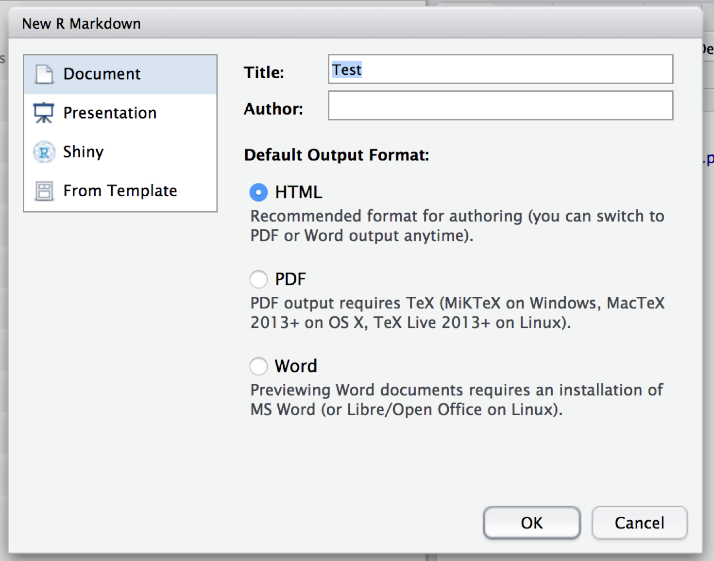
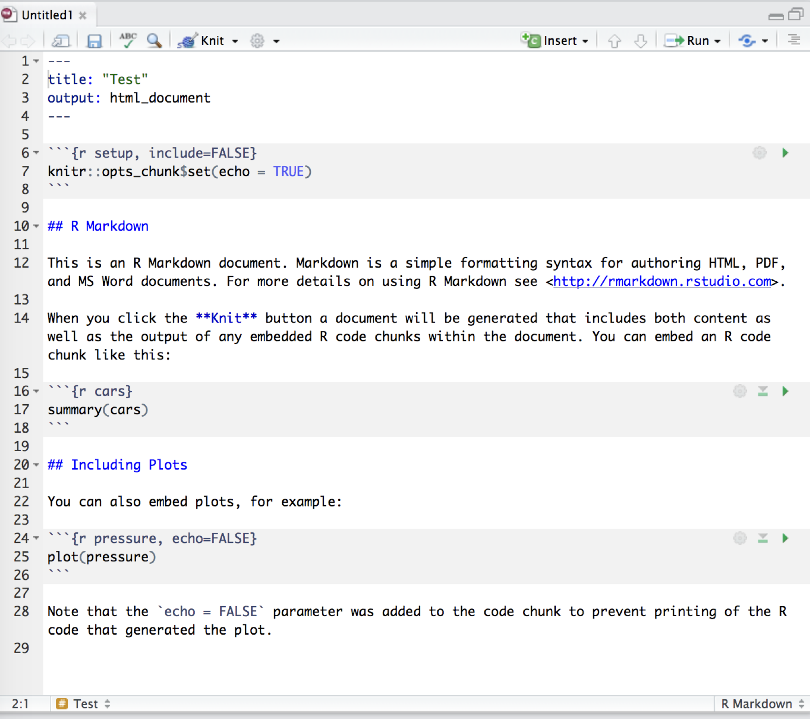
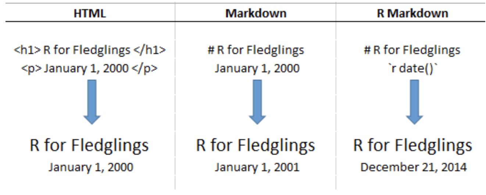
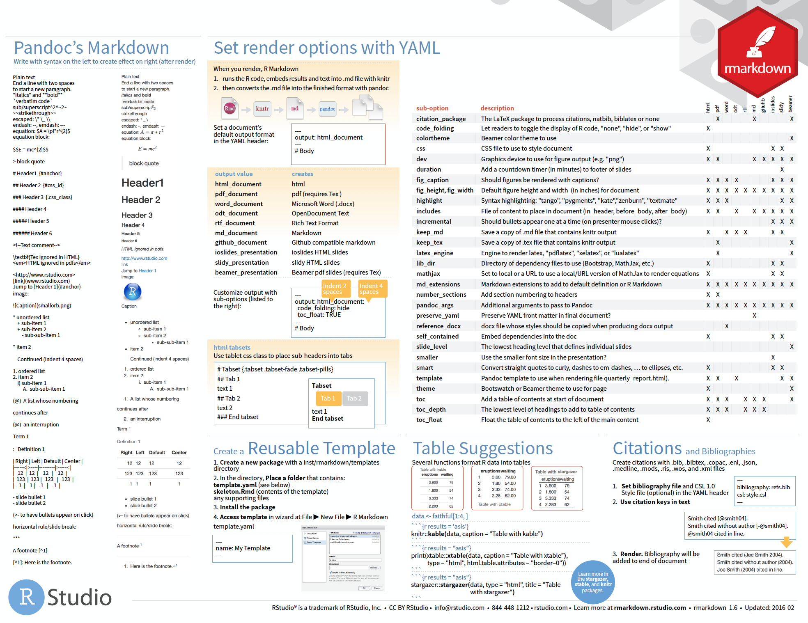

Data Analysis with R
11 - R Markdown for communication
Saskia A. Otto
Postdoctoral Researcher
R Markdown

How to go from R to any output format for sharing your results?

source: rmarkdown.rstudio.com
By using R Markdown

- R Markdown is an easy-to-write plain text formatter designed to make web content, reports or presentations easy to create,
- can weave the outputs of your R code, like figures and tables, with text to create a report,
- supports not only the reproducibility of your analysis but also the entire report,
- supports various different static as well as dynamic output formats.
- How does it work? R Markdown encapsulates various processs into a single render function:

modified from the R Markdown cheat sheet (under CC-BY-SA license)
A quick introduction
source: rmarkdown.rstudio.com (RStudio is a trademark of Rstudio, Inc.)
--- &vcenter
How to create an .Rmd file

How to create an .Rmd file

Structure of an .Rmd file

Structure of an .Rmd file

Rendering Output

(Markdown) Syntax

source: rmarkdown.rstudio.com
HTML vs Markdown vs R Markdown Syntax

source: Donovan, T., Brown, M., & Katz, J. (2015). Vermont Cooperative Fish and Wildlife Research Unit R Projects: R for Fledglings.
Retrieved from
https://www.uvm.edu/rsenr/vtcfwru/R/fledglings/08_Markdown.html
(under CC-BY-NC-ND 4.0 license)
Get more infos

- The cheatsheet gives you a good overview.
- R Studio provides also a useful reference guide.
- Look at the R Markdown Webside from R Studio for a first start.
- To dig deeper you will find many youtube videos and online tutorials.
- A good one is, for instance: R for fledglings


Cheat sheet is freely available at
https://www.rstudio.com/resources/cheatsheets/
Your turn...
Task: Convert an R script into a Markdown file
Start your first R Markdown file that should render a html document and save it under any name.
In lecture 8 on visualizations you were asked to answer the following questions using the hydro dataset (file "data/1111473b.csv"):
- What happens if you make a scatterplot of station (x) vs temp (y)? Why is the plot not useful? What would be a better plot?
- What happens if you make a boxplot of cruise (x) vs psal (y)? Why is this plot less suitable? What could be an alternative?
If you have done this exercise you can simply use your code and copy and paste it into the code chunks of your .Rmd file. If you haven't done the exercise you have now the opportunity to make up leeway.
Implement the following in your .Rmd file
- Start with R code chunks for loading the data and required libraries
- Add code chunks for i) any data modifications ii) any plot
- Think about which code chunks should be evaluated (eval=TRUE) or not displayed (echo=FALSE)
- Think about the dimensions of the figure and add the required specifications in the chunk options
- Include different headers and subheaders
- Add your answers and think about whether you want to use i) any ordered or unordered lists ii) text in bold or italic
- Add a webside link that fits to the topic
- Add an image
Note:
Try to knit your .Rmd file frequently (after any major addition)!! It is highly likely that you will run into an error message and that way you can identify the cause much faster.Now its time for your FIRST CASE STUDY!!!
Photo by NASA (ID ISS040-E-12110), accessed here
How do you feel now.....?
Totally confused?

Practice on the exercise data and go through the suggested info material.
Totally bored?

Once your done, change in the YAML header the output format to e.g. PDF and knit your .Rmd file again. How do you like that output? Play around with all the options and output formats that R Markdown provides. Convert any of your R scripts you wrote so far into an .Rmd file
Totally content?
Then go grab a coffee, lean back and enjoy the rest of the day...!

Thank You
For more information contact me: saskia.otto@uni-hamburg.de
http://www.researchgate.net/profile/Saskia_Otto
http://www.github.com/saskiaotto

This work is licensed under a
Creative Commons Attribution-ShareAlike 4.0 International License except for the
borrowed and mentioned with proper source: statements.
Image on title and end slide: Section of an infrared satallite image showing the Larsen C
ice shelf on the Antarctic
Peninsula - USGS/NASA Landsat:
A Crack of Light in the Polar Dark, Landsat 8 - TIRS, June 17, 2017
(under CC0 license)